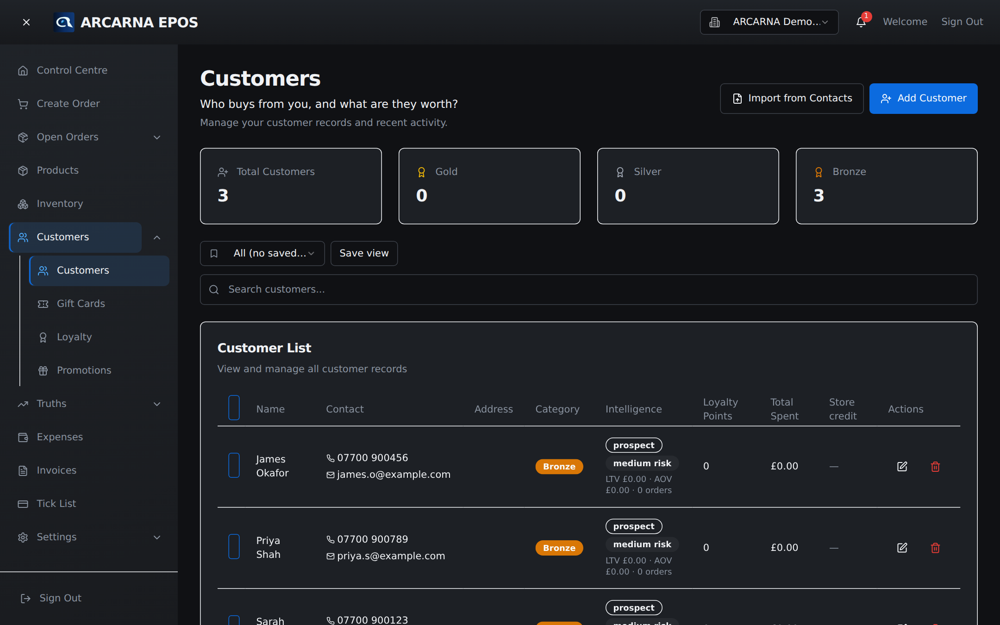
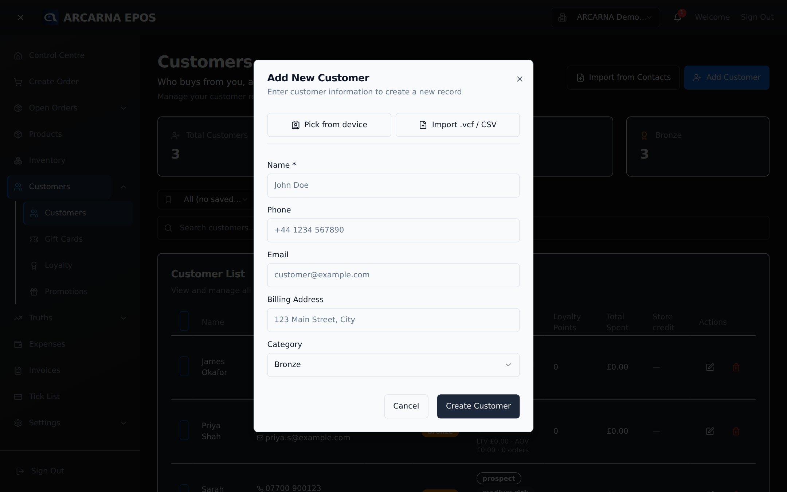
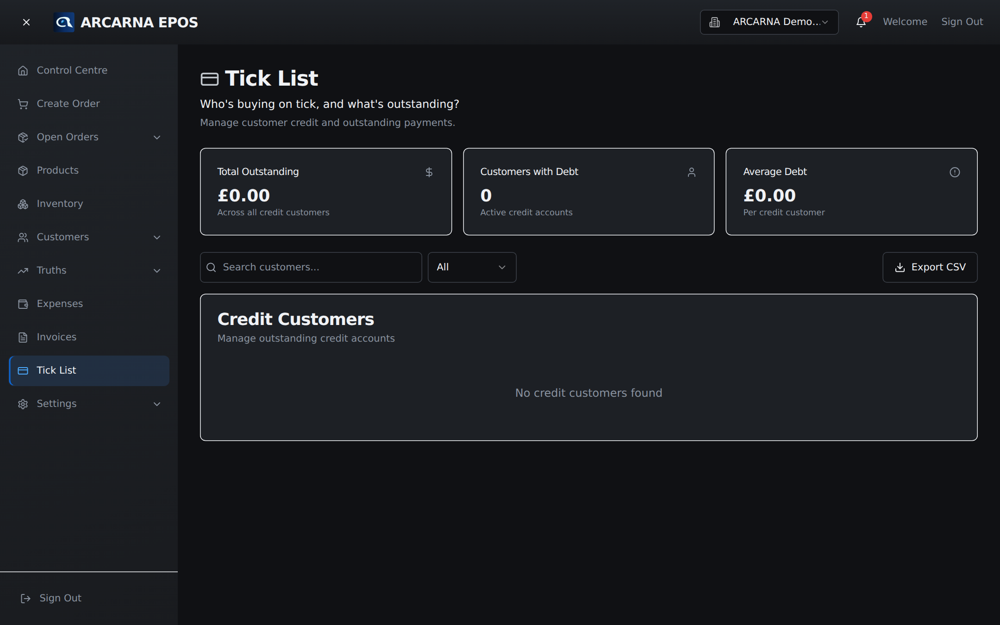

Staff training manual
Staff training manual
How to keep customer records tidy — so every regular is recognised, every receipt reaches the right inbox, and you can see at a glance what someone is worth.
What this screen is for
The Customers screen
The Customers screen is your address book and your memory. It holds one record per person who buys from you: their name, how to reach them, which loyalty group they sit in, and a running picture of how much they have spent and how recently. At the till you attach a customer to an order so their spend and loyalty points keep building.
Everyone can open Customers and look someone up. CASHIER Adding, editing and removing records is a manager job. MANAGER

What you see across the top
| Part | What it tells you |
|---|---|
| Count tiles | Four small tiles — total customers, and how many sit in Gold, Silver and Bronze. |
| Search customers | Type a name, email or phone number to filter the list as you go. This is the fastest way to find someone. |
| Add Customer | Opens the form to create a new record. MANAGER |
| Import from Contacts | Brings in many people at once from a phone-contacts export (a .vcf file) or a spreadsheet (CSV). Useful when first setting up. MANAGER |
Creating a record
Adding a customer
Add someone once and arcarna remembers them for good. Only the name is required — everything else can be filled in now or added later.

- Select Add Customer at the top right. The Add New Customer form opens.
- Name — type the person's name. This is the only required field, marked with a *.
- Phone — their contact number, for example +44 1234 567890. Leave blank if you don't have it.
- Email — their email address. This is also where emailed receipts and invoices go, so take care to get it right.
- Billing address — the address that appears on their invoices. Optional.
- Category — the loyalty group this customer belongs to. New records start at Bronze; you can choose Silver, Gold or Platinum instead.
- Select Create Customer. The record is saved and appears in the list.
Keeping details current
Editing a customer's details
Details change — people move house, swap phone numbers, or earn their way into a higher loyalty group. Keep the record honest so receipts arrive and spend is credited to the right person.
- Find the customer using the search box.
- Select the Edit (pencil) button on their row. On a phone this is the Edit button on their card.
- Change any of the fields — name, phone, email, billing address or category.
- Select Update Customer to save, or Cancel to leave the record untouched.
Moving someone to a higher category — say Bronze up to Gold — is done here, in the Category field. Spend, loyalty points and store credit are worked out by arcarna from real orders, so you don't edit those by hand.
Reading a customer at a glance
Viewing a customer's history
Each row carries the story of that customer without you having to open anything. It is the answer to “who is this, and are they worth looking after?”
| Column | What it means |
|---|---|
| Contact | Their phone and email, for reaching them. |
| Category | Their loyalty group — Bronze, Silver, Gold or Platinum. |
| Intelligence | A short read on the customer: their segment, how likely they are to drift away (their inactivity risk), lifetime value, average order value, number of orders and the date they last bought. A Manual tag means someone has fixed their grouping by hand. |
| Loyalty points | Points earned so far, which can be redeemed against future spend. |
| Total spent | Everything they have spent with you, for example £1,240.50. |
| Store credit | Any credit or gift-card balance they hold, ready to spend. |
Handle with care
Removing a customer
Removing a customer is for genuine mistakes — a duplicate record, or a test entry. It is not the way to deal with someone who simply hasn't been in for a while.
- Find the customer and select the Delete (bin) button on their row.
- arcarna asks you to confirm. Read the name, then confirm only if you are sure.
Buying on account
The Tick List
Some customers take goods now and settle up later — buying “on tick”. The Tick List is the single place that answers “who owes us money, and how much?” Everyone can open it to check; recording payments and chasing debts is a manager job. CASHIER MANAGER

| Part | What it tells you |
|---|---|
| Total outstanding | The sum owed across all credit customers, for example £480.00. |
| Customers with debt | How many people currently owe something. |
| Total debt (per row) | What that customer owes right now. A Pending badge means there is still a balance; Paid means they are clear. |
| Payment | Records that a customer has settled their balance. MANAGER |
| Remind | Sends the customer a payment reminder by email. MANAGER |